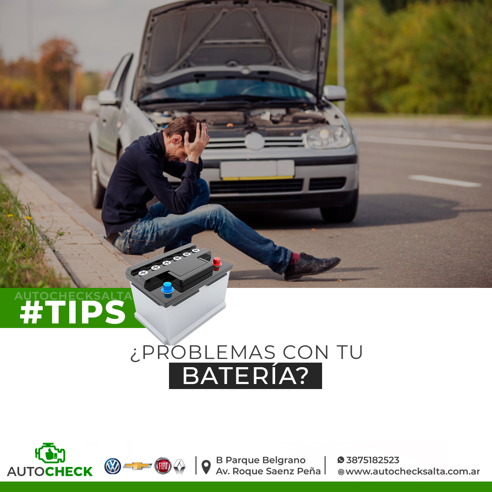

Escaneo electrónico y diagnóstico computarizado
- Lectura y borrado de códigos (DTC)
- Datos en tiempo real: O2, MAF/MAP
- Luces testigo: Check Engine, ABS, Airbag
- Fallas intermitentes
30 a 45 min aprox.
Agendar escaneo
Diagnóstico con instrumentos y evidencia. Medimos antes de cambiar, para que pagues solo lo que tu auto realmente necesita.
Primero entender.
Después reparar.
Ilustración del tipo de informe que recibís.

Elegí lo que notás y te contamos las causas más comunes. Es una guía orientativa: la causa real se confirma midiendo.
Causas frecuentes
Qué hacemos
Una caída de tensión, un relay defectuoso, bornes sulfatados o una señal de inmovilizador ausente pueden simular un daño mayor. Por eso aplicamos un protocolo de 5 pasos para darte una respuesta exacta.
Consultar falla de arranque
Medición en reposo y caída bajo carga real para saber si retiene el amperaje de arranque (CCA).
Cables de potencia, conexiones a chasis y bloque para descartar falsos contactos o caídas de voltaje.
Prueba de excitación (línea 50) y consumo del motor de arranque: ¿falla mecánica o eléctrica?
Lectura de señal CKP (cigüeñal) para descartar corte de ignición, inmovilizador o falta de pulso de inyección.
Te mostramos los valores reales antes de desarmar o presupuestar repuestos. Sabés exactamente qué tiene tu vehículo.
Peritaje mecánico completo antes de cerrar una compra: kilometraje real por módulos, compresión, tren delantero, frenos, fugas y signos de choque estructural.
Ver qué incluyeComprar un usado sin revisarlo es apostar. Con nuestro peritaje sabés el estado real del auto y tenés argumentos para negociar o para evitar un mal negocio.
Reservar chequeoFallas almacenadas en todos los módulos.
Verificado con el historial de módulos.
Vano motor, compresión y pérdidas de fluidos.
Tren delantero, frenos y señales estructurales.
Completá la ficha de ingreso online, elegí día y horario y firmá tu consentimiento.
Medimos y escaneamos tu vehículo con instrumental profesional. Sin suposiciones.
Recibís el informe con valores reales y decidís con total claridad.
No cambiamos la batería “por las dudas”: te mostramos la medición exacta.
A metros de Parque Belgrano y Roque Sáenz Peña, con lugar para pruebas.
Trato directo con quien diagnostica y trabaja en tu vehículo.
Un diagnóstico preciso evita el ensayo y error que infla los costos.
Coordinamos asistencias puntuales en Zona Norte para verificación rápida de batería y arranque en el lugar, o bien recepción directa en taller con turno previo.
Un escaneo general con informe suele tomar entre 30 y 45 minutos, evaluando códigos de falla y parámetros en vivo.
Incluye escaneo electrónico, inspección visual de vano motor, detección de fugas, estado de batería y alternador, verificación de tren rodante y prueba de funcionamiento general.
Sí. Trabajamos con turnos programados para dedicarle el tiempo exclusivo que requiere cada vehículo. Podés sacarlo desde la ficha de ingreso online.
Dirección
Manzana 9 Casa 8, B° Roque Sáenz Peña
(Zona Parque Belgrano), Salta Capital · CP 4400
Horarios
Lunes a Viernes de 09:00 a 17:00 hs
Sábados y domingos cerrado
Contanos qué le pasa a tu auto y coordinamos la revisión.
Hablar con un técnico